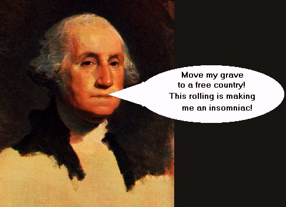

This page is in violation of the Communications Decency Act!
Special words from our Forefather George Washington

Attorney General:Adolf "Furher" Hitler
With Special Sidekick:Girl
from Friends
NOTE: This World
Wide Web server is currently under
destruction.
As the largest law firm in the Nation, the Department of Justice serves to punish all who don't agree with the moral standards set forth by Clinton (tm). We are a bureaucratic assembly of laywers, politicians, and criminals (I repeat myself) and are privately owned by the nation of Japan. We operate by enslaving our citizens with taxation. We hate all the mexicans that swim into our country and take our jobs. We censor our slaves and punish them severly for disobeying. We are greater than God. Anything and anyone different must be jailed.
BIG BROTHER IS WATCHING YOU! WE ARE BIG BROTHER! HAIL YOUR NEW MASTER!
CONSTITUTIONAL RIGHTS TAKEN SO FAR
Free speech in the land of the free? Arms in the home of the brave? Privacy in a state of wiretaps and government intrusion? Unreasonable searches? We are a little behind our 1984 deadline, but working slowly one amendment at a time. It is hard to trick hundreds of millions of people out of their freedoms, but we should be complete within a decade. Here is a list of some of our accomplishments.
ACCOMPLISHMENTS
EVIL WORKS OF THE ANTICHRIST
MOST POPULAR SITES FROM USDOJ.GOV
|
Icon |
Site |
Hits this week |
Most Frequent Source Host |
|
|
playboy.com |
65536 |
exon.senate.gov |
|
|
xxxpictures.com |
1024 |
exon.senate.gov |
|
|
microsoft.com |
666 |
gates.whitehouse.gov |
|
|
hillaryshair.com |
1 |
clinton.whitehouse.gov |
TOP 10 REASONS FOR SUPPORTING THE COMMUNICATIONS DECENCY ACT

Check out other Parts of 2600